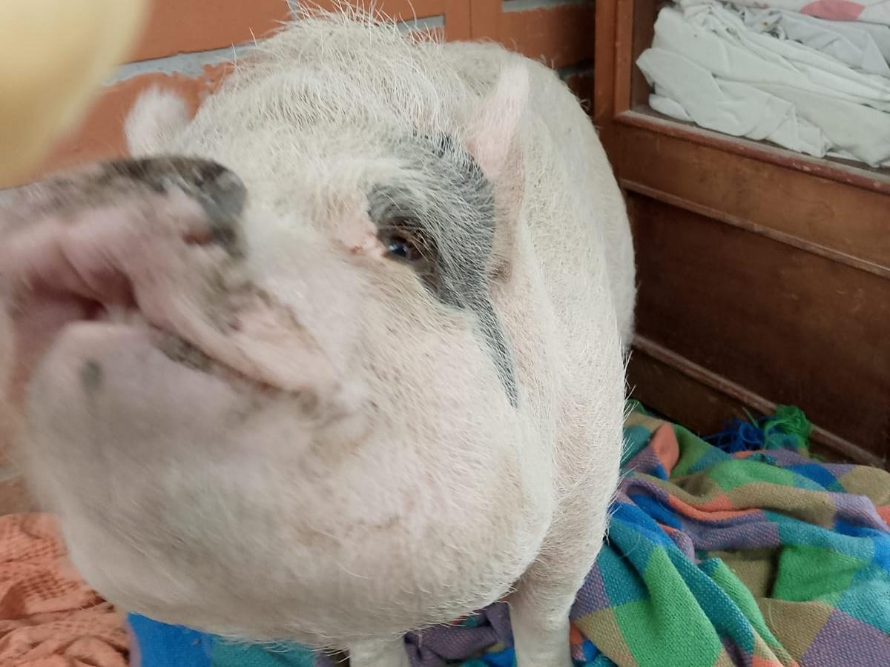
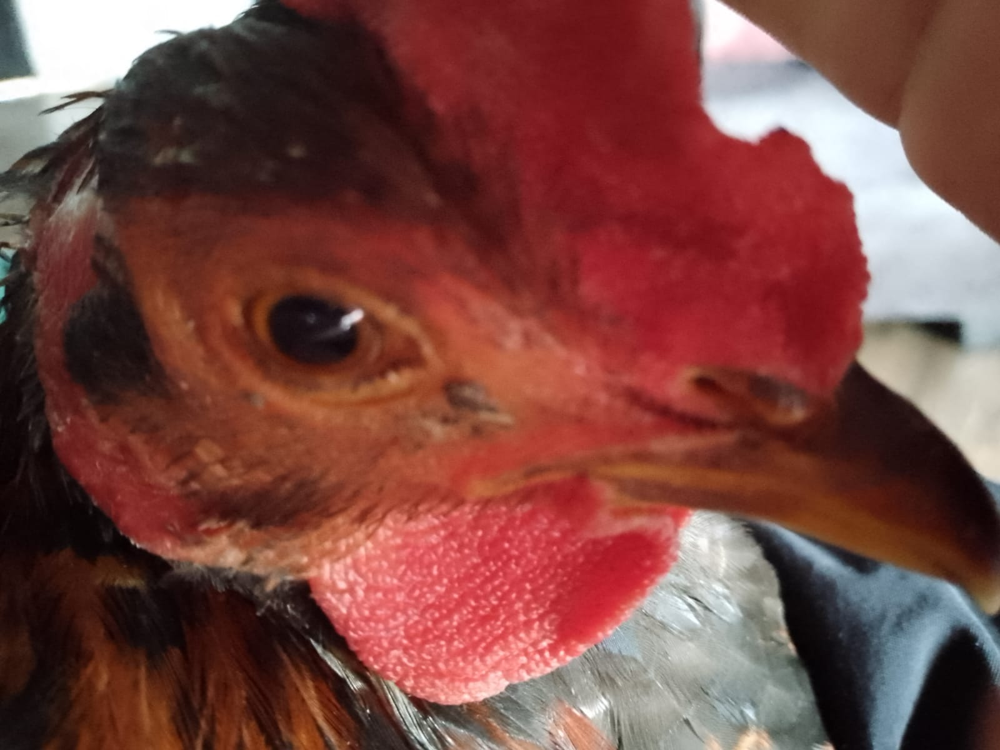
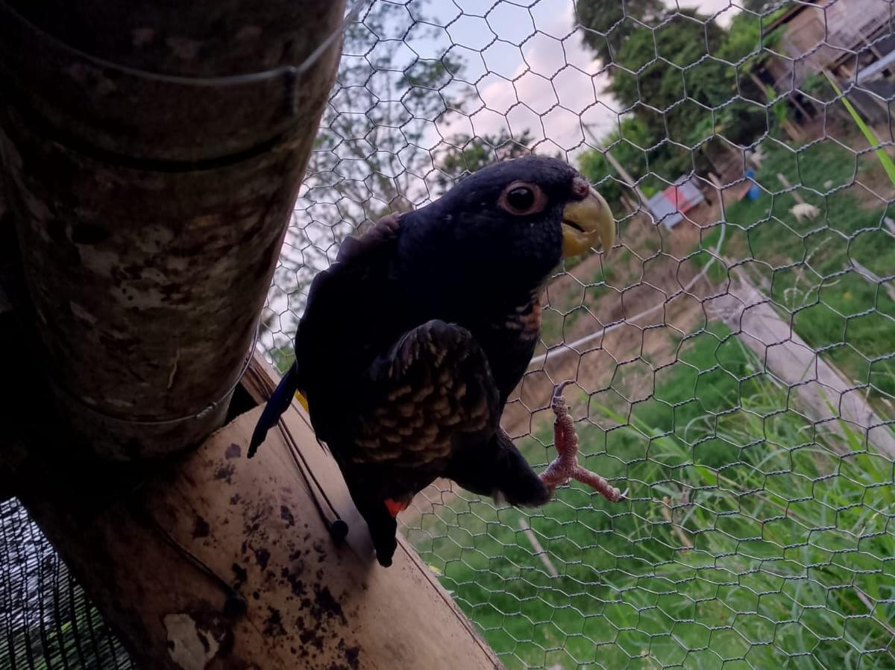
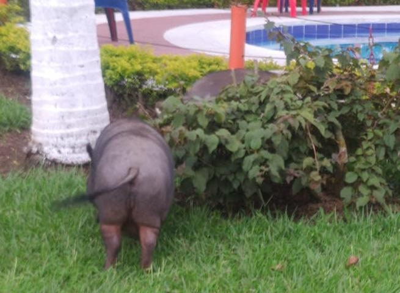

Mis mascotas son: Lupita, es una marrana, Julián, es un gallo muy lindo, Riki, es otro marrano y Teo, es un lorito. Lupita duerme todo el día y solo se levanta a comer y a hacer sus necesidades, Julián me levanta todas las mañanas, me picotea aveces para que le dé comida. A Riki le gusta comer muchooo y le encanta que lo acaricien aunque es bravo, Teo canta en las mañanas, daña las candelas y solo se deja acariciar por mi mamá, en fin... Esas son mis mascotas.
   